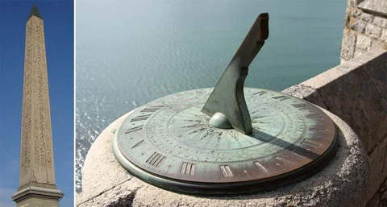
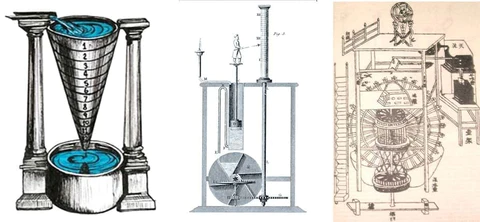
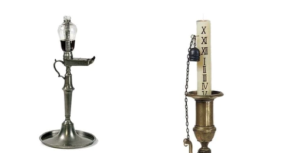
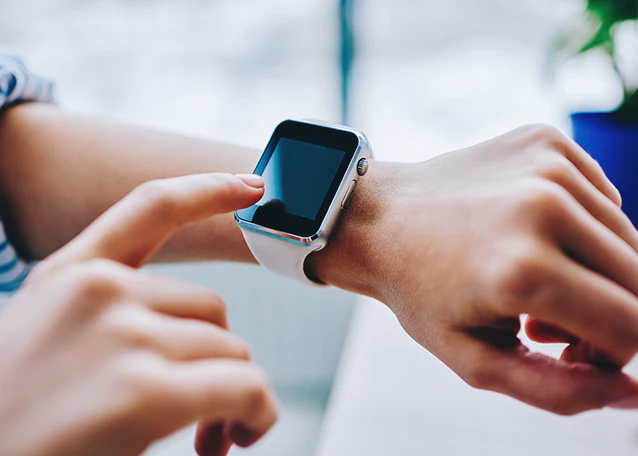

Origen y evolución del reloj a través del tiempo
¿Cómo surgieron los relojes?
Los relojes son instrumentos que miden y muestran el tiempo. Durante miles de años, los seres humanos han medido el tiempo de diversas maneras, como siguiendo los movimientos del sol con relojes de sol, utilizando relojes de agua y usando velas y relojes de arena.
Nuestro sistema moderno utiliza un sistema de 60 minutos, es decir, un reloj con incrementos de 60 minutos y 60 segundos, que se remonta al año 2000 A.C. en la antigua Sumeria.

Cronología de la evolución del cronometraje
Los primeros relojes mecánicos se inventaron en Europa a principios del siglo XIV y fueron el dispositivo estándar para medir el tiempo hasta la invención del reloj de péndulo en 1656
Fueron muchos los elementos que se unieron a lo largo del tiempo para darnos los modernos aparatos de medición que tenemos hoy en día. Veamos la evolución de estos componentes y las culturas que contribuyeron a su desarrollo.
Relojes de sol y obeliscos
Los antiguos obeliscos egipcios, construidos en torno al 3500 A.C., también se encuentran entre los primeros relojes de sombra.
El reloj de sol más antiguo que se conoce procede de Egipto y se remonta a unos 1500 años antes de Cristo.
Los relojes de sol tienen su origen en los relojes fantasma, que fueron los primeros dispositivos utilizados para medir las partes del día.
 Reloj solarReloj hidráulico griego
Los griegos inventaron un primer prototipo de despertador. Construyeron un reloj de agua, llamado clepsidra, en el que las aguas crecientes marcaban el tiempo y acababan golpeando un pájaro mecánico que hacía sonar un silbato de alarma.
Las clepsidras eran más útiles que los relojes de sol -podían utilizarse en interiores, de noche y también cuando el cielo estaba nublado-, aunque no eran tan precisas.
Los relojes de agua griegos se hicieron más precisos hacia en el año 325 A.C. y se adaptaron para tener una aguja horaria, lo que hizo que la lectura del reloj fuera más precisa y práctica.
 Reloj hidráulicoReloj de vela
La primera mención de los relojes de vela procede de un poema chino, escrito en el año 520 D.C.
Según el poema, la vela graduada, con un ritmo de combustión medido, era un medio para determinar la hora por la noche. En Japón se utilizaron velas similares hasta principios del siglo X.
 Reloj de velaReloj de arena
Los relojes de arena fueron los primeros dispositivos de medición del tiempo fiables, reutilizables, razonablemente precisos y fáciles de fabricar.
A partir del siglo XV, los relojes de arena se utilizaban principalmente para dar la hora en el mar.
Un reloj de arena consiste en dos ampollas de vidrio conectadas verticalmente por un cuello estrecho que permite un flujo controlado de material, generalmente arena, de la ampolla superior a la inferior.
Los relojes de arena se siguen utilizando hoy en día. También se han adoptado para su uso en las iglesias, la industria y la cocina.
 Reloj de arena
Reloj de arena
Relojes de monasterio y torres de reloj
Los primeros relojeros europeos medievales fueron monjes cristianos. Decir la hora se convirtió en una necesidad en la vida diaria para seguir los servicios religiosos. El primer reloj fue construido por el futuro Papa Silvestre II alrededor del año 996.
Posteriormente, los monjes construyeron relojes mucho más sofisticados y torres de reloj de iglesia. Peter Lightfoot, un monje de Glastonbury del siglo XIV, construyó uno de los relojes más antiguos que se conservan y que aún se utiliza en el Museo de Ciencias de Londres.
 Relojes de monasterio y torres de reloj
Relojes de monasterio y torres de reloj
El reloj antiguo se está poniendo cada vez más de moda.
Reloj de pulsera
En 1504, Peter Henlein inventó en Núremberg (Alemania) el primer reloj portátil. No fue muy preciso.
La primera persona que llevó un reloj en la muñeca fue el matemático y filósofo francés Blaise Pascal (1623-1662). Con un trozo de cuerda, se ató el reloj de bolsillo a la muñeca.
 Reloj de pulsera
Reloj de pulsera
Manecilla de los minutos
En 1577, Jost Burgi inventó el minutero. El invento de Burgi formaba parte de un reloj fabricado para Tycho Brahe, un astrónomo que necesitaba un reloj preciso para observar las estrellas.
 Manecilla de los minutos
Manecilla de los minutos
Reloj de péndulo
En 1656, Christian Huygens inventó el reloj de péndulo, que hizo que los relojes fueran aún más precisos. Un reloj de péndulo es un reloj que utiliza un péndulo (el mecanismo está en masculino) para medir el tiempo.
Lo que lo hace tan preciso es que se trata de un oscilador armónico oscila en un intervalo de tiempo determinado según su longitud y se resiste a oscilar a otras velocidades.
Sin embargo, el péndulo debe permanecer inmóvil para funcionar, moverlo afectará al movimiento del péndulo causando inexactitudes.
Hasta los años 30, el péndulo era el "reloj" más preciso del mundo.
Esto explica su uso generalizado a lo largo de los siglos XVIII y XIX. En las décadas de 1930 y 1940 fue sustituido por relojes eléctricos sincrónicos mucho más baratos.
 Reloj de péndulo
Reloj de péndulo
Despertador mecánico
El primer despertador mecánico fue inventado por el estadounidense Levi Hutchins, de Concord (New Hampshire), en 1787.
Sin embargo, la alarma de su reloj sólo podía sonar a las 4 de la mañana (adiós a dormir hasta tarde).
En 1876, Seth E. Thomas patentó un reloj despertador mecánico de cuerda que podía ajustarse en cualquier momento.
 Despertador mecánico
Despertador mecánico
Hora estándar
Sir Sanford Fleming inventó la hora estándar en 1878. La hora estándar es la sincronización de los relojes de una zona geográfica con una única hora estándar.
Nació de la necesidad de facilitar la previsión meteorológica y los viajes en tren. En el siglo XX, las zonas geográficas estaban distribuidas uniformemente en los husos horarios.
Reloj de cuarzo
En 1927, Warren Marrison, un ingeniero de telecomunicaciones de origen canadiense, buscaba estándares de frecuencia fiables en los laboratorios de Bell Telephone.
Desarrolló el primer reloj de cuarzo, un reloj de gran precisión basado en las vibraciones regulares de un cristal de cuarzo en un circuito eléctrico.
 Reloj de cuarzo
Reloj de cuarzo
Reloj a pilas
La Warren Clock Company se fundó en 1912 y produjo un nuevo tipo de reloj que funcionaba con pilas, antes de esto, los relojes se daban cuerda al revés o funcionaban con pesas.
 Reloj a pilas
Reloj a pilas
Reloj automático
El inventor suizo John Harwood desarrolló el primer reloj automático en 1923.
Esto marcó para siempre la era de los relojes tal y como los conocemos hoy en día. Esto permitió al hombre tener el tiempo al alcance de la mano dondequiera que estuviera.
 Reloj automático
Reloj automático
Reloj digital
En 1970 nació el reloj digital. Tenía una pantalla oscura con puntos LED que se encendían e indicaban la hora al oprimir un botón.Comenzó a ser comercializado por la empresa estadounidense Hamilton, pero pronto los chinos tomaron la delantera y empezaron a producir relojes digitales con otras aplicaciones como cronómetro y calculadora.
El primer reloj inteligente como tal surgió en el año 2000, contaba con sistema Linux, memoria RAM y Bluetooth. A partir de ahí han evolucionado incorporando funciones más complejas y hoy son como pequeñas computadoras, capaces de navegar por Internet y realizar llamadas, entre otras cosas.
Como se puede ver, descubrir exactamente cómo decir la hora ha llevado una enorme cantidad de tiempo, años y épocas.
La medición del tiempo siempre ha sido importante para los seres humanos y sin duda, un reloj es una pieza que nunca ha perdido su apreciada reputación y es indispensable para nuestro día a día.
Se ve viviendo sin relojes o dispositivos para saber la hora exacta? La verdad es que no.